| HOME | PERSONAL | PROJECTS | LINKS |
Equazione secolare
Dall'equazione ad autovalori nell'energia
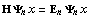
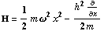
e dalla condizione di normalizzazione
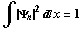
Segue l'espressione delle funzioni d'onda.
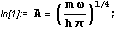
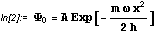
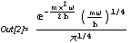
Lo spettro dell'energia
Questa è la funzione d' onda associata all'oscillatore nello stato energetico più basso.
Per avere le altre funzioni utilizziamo l'operatore di creazione che ha la forma
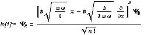
L'algoritmo
Ecco un'implementazione ricorsiva dell'operatore di salita.
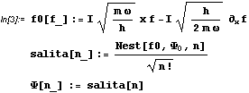
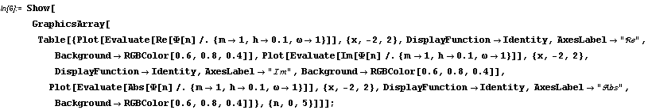
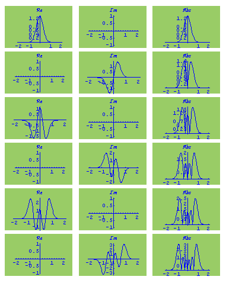
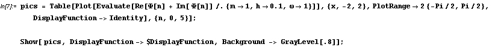
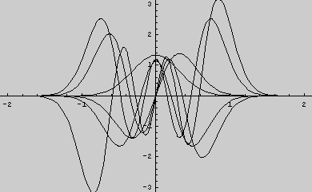
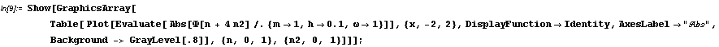
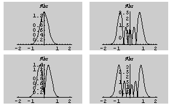
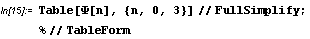
| 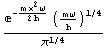 |
| 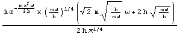 |
| 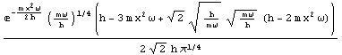 |
| 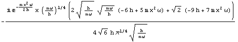 |
| HOME | PERSONAL | PROJECTS | LINKS |